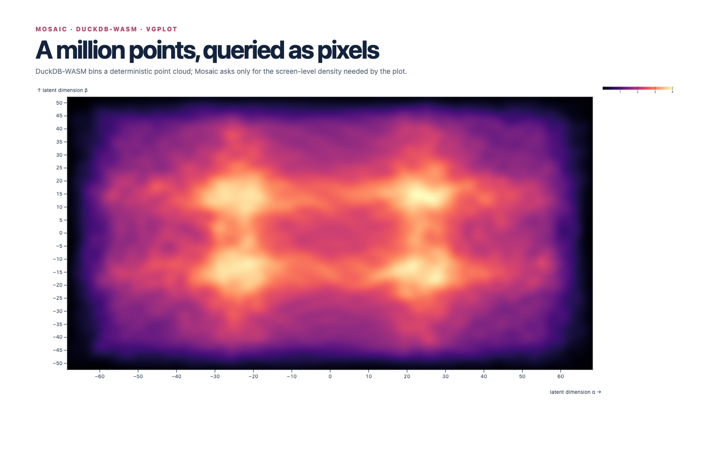

01 · large-data density
Density
Where do one million points concentrate at screen resolution?
src/main.ts
if (scene === 'density') {
await coordinator.exec(`
CREATE TABLE points AS
SELECT
i,
43 * sin(i * 0.017) + 19 * sin(i * 0.00031) + ((i % 97) / 97.0 - 0.5) * 13 AS x,
31 * cos(i * 0.013) + 16 * sin(i * 0.00047) + ((i % 61) / 61.0 - 0.5) * 11 AS y,
CASE WHEN i % 4 = 0 THEN 'north' WHEN i % 4 = 1 THEN 'east' WHEN i % 4 = 2 THEN 'south' ELSE 'west' END AS cohort
FROM range(${meta.rows}) AS t(i)
`);
chart.replaceChildren(vg.plot(
vg.heatmap(vg.from('points'), {x: 'x', y: 'y', bandwidth: 10, pixelSize: 1}),
vg.intervalXY({as: vg.Selection.crossfilter()}),
vg.colorScheme('magma'), vg.colorLegend(), vg.width(1120), vg.height(610),
vg.marginLeft(62), vg.marginBottom(50), vg.xLabel('latent dimension α'), vg.yLabel('latent dimension β')
));